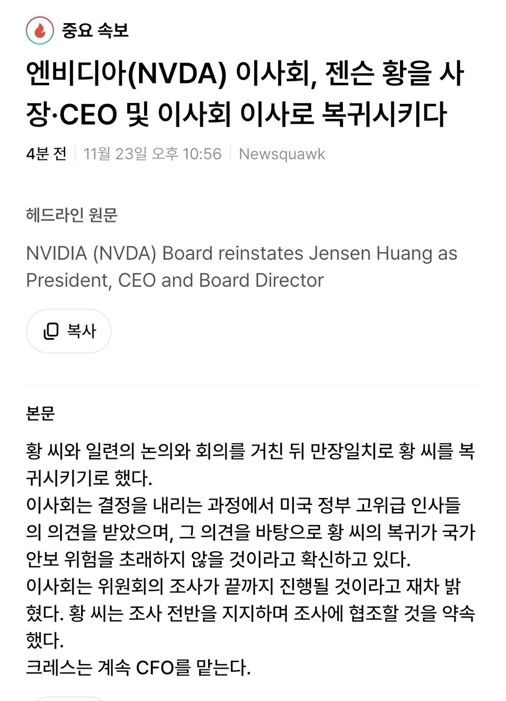

기술·산업 · 사진 · 2026-11-23
엔비디아 이사회, 젠슨 황 사장·CEO 및 이사 복귀 결정 속보
Newsquawk 속보 헤드라인에 따르면 엔비디아 이사회는 젠슨 황과의 논의 끝에 만장일치로 그를 사장·CEO 및 이사회 이사로 복귀시키기로 했다.

- 엔비디아(NVDA) 이사회는 젠슨 황을 사장, CEO 및 이사회 이사로 복귀시키기로 했다.
- 이사회는 황 씨와 일련의 논의와 회의를 거친 뒤 만장일치로 복귀를 결정했다.
- 이사회는 결정 과정에서 미국 정부 고위급 인사들의 의견을 받았으며, 이를 바탕으로 황 씨의 복귀가 국가안보 위험을 초래하지 않을 것이라고 확신한다고 밝혔다.
- 이사회는 위원회의 조사가 끝까지 진행될 것이라고 재차 밝혔다.
- 황 씨는 조사 전반을 지지하며 조사에 협조할 것을 약속했다.
- 크레스는 계속 CFO를 맡는다.
- 해당 내용은 11월 23일 오후 10시 56분 Newsquawk 속보로 전해졌다.